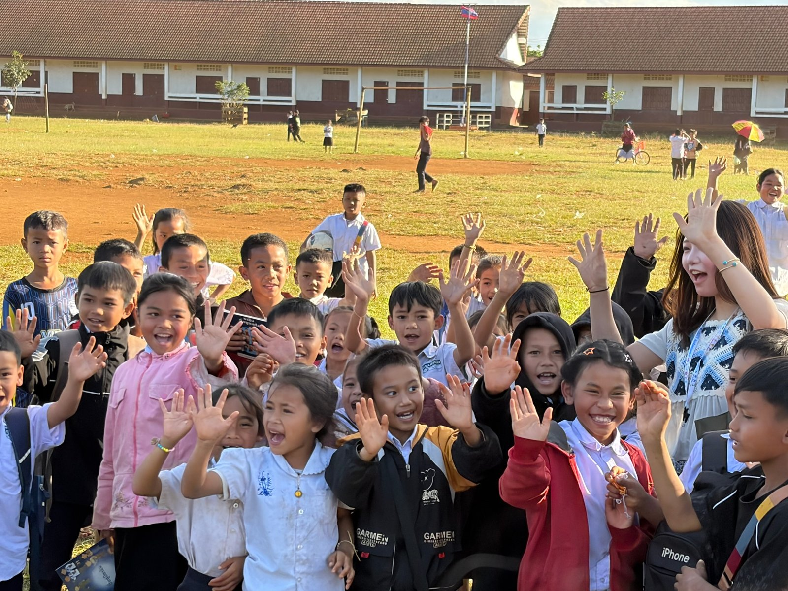
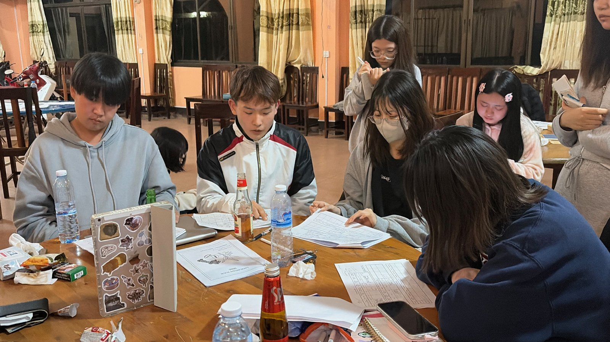

STUDY TOUR
会いに行くから、
見えてくること。
学校やコーヒー農家を訪ね、現地の暮らしや人との出会いから学ぶ。スタディツアーで得た気づきを、次の活動へつなげています。

2026年度の準備
2026年度は12月の実施を予定しています。食育・衛生・環境をテーマにしたテキストブックの制作など、現地での教育支援に向けた準備を進めています。
スタディツアーとは？
エフラオが毎年12月ごろに実施している約10日間のラオス訪問プログラムです。 コーヒー農家さんや教育局、現地の学校、村の人たちとの交流を通して、 「支援される側」「支援する側」という関係を超えた、顔の見えるつながりをつくることを大切にしています。
これまでに取り組んできたプログラム
① 小学校での交流・ワークショップ
これまでのツアーでは、ラオスの小学校を訪問し、教材を使ったワークショップや授業見学、遊びを通した交流などに取り組んできました。 子どもたちの笑顔や、学校の雰囲気を肌で感じることができる時間です。
② コーヒー農家さんの訪問
実際にコーヒーが栽培・加工されている農園を訪れ、栽培の工夫や収穫の大変さ、 価格の変動などについてお話を聞きます。日本で販売しているコーヒーが、 どのような現場から届いているのかを学びます。
③ ホームステイ・家計調査
農家さんの家に泊まり込み、生活を共にするホームステイを行う年もあります。 必要に応じて家計調査なども行い、支援の方向性を考えるための情報を集めます。
参加すると得られるもの
- 「国際協力」や「フェアトレード」が自分ごととしてイメージできる
- ラオスの人たちとの実際のつながりができる
- 自分がこれからどんな関わり方をしたいか考えるきっかけになる
ツアーはあくまで「きっかけ」であり、帰国後の活動や、ラオスとの関わり方を 一緒に考えていくことを大事にしています。
